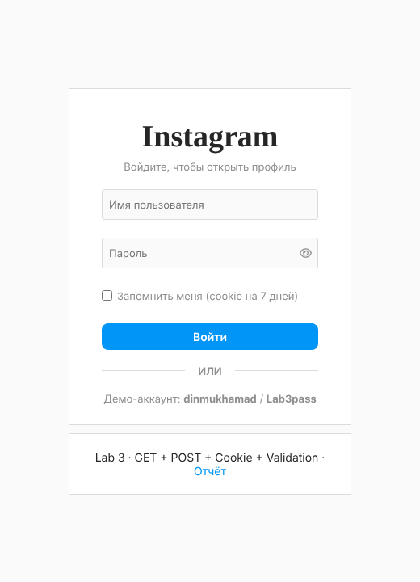
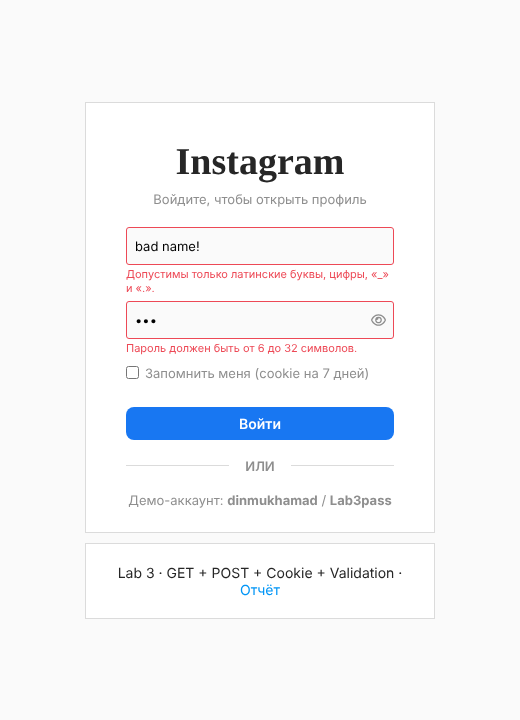
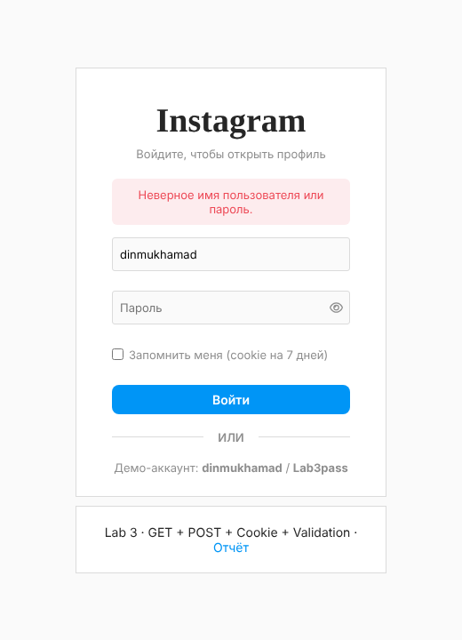
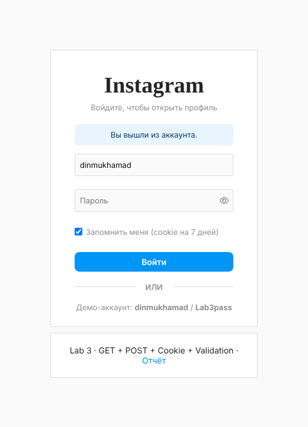
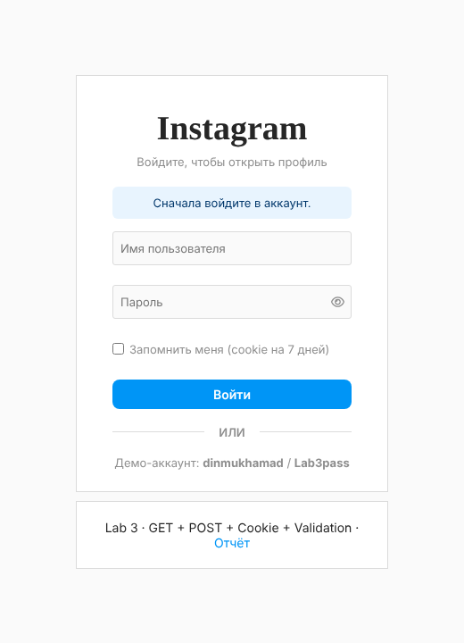
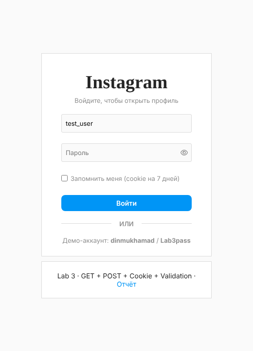

Сделать вход на сайт: при открытии сайта пользователь видит форму входа, а после успешного входа переходит на страницу профиля в стиле Instagram. В работе нужно использовать:
Технологии: только HTML, CSS и JavaScript. Сайт размещён на GitHub Pages.
index.html со страницей входа.profile.html (страница Instagram).profile.html сначала проверяет cookie. Если её нет, пользователь возвращается на index.html?error=auth.index.html?logout=1.| GET | POST | |
|---|---|---|
| Где передаются данные | В строке URL: ?logout=1 | В теле HTTP-запроса |
| Видимость | Видны в адресной строке и истории | Не видны в URL |
| Назначение | Получение страницы, неконфиденциальные параметры | Отправка данных формы (логин, пароль) |
| Как читать в JS | new URLSearchParams(location.search) | Событие submit формы, form.elements |
| В этой работе | ?logout=1, ?error=auth, ?username=… | Форма входа method="post" |
Форма входа объявлена с method="post", потому что пароль нельзя передавать через GET: он попал бы в адресную строку и историю браузера. GitHub Pages отдаёт только статические файлы и не принимает POST-запросы, поэтому отправку формы перехватывает JavaScript (event.preventDefault()) и обрабатывает данные прямо в браузере.
Cookie — небольшие данные, которые браузер хранит для сайта и отправляет с каждым запросом. В JavaScript они записываются и читаются через document.cookie.
| Cookie | Значение | Срок | Зачем |
|---|---|---|---|
ig_user | логин | До закрытия браузера, или 7 дней с «Запомнить меня» | Признак входа. Без неё profile.html не открывается. |
ig_remember | логин | 7 дней | Подставляет логин в форму после выхода. |
ig_last_visit | дата и время входа | 7 дней | Показывается в профиле: «Вы вошли как … · вход: …». |
Атрибуты cookie: path — папка сайта (/web_labs/), max-age — срок жизни в секундах, SameSite=Lax — защита от отправки с чужих сайтов, Secure — только по HTTPS.
Перед входом JavaScript проверяет поля и выводит ошибку под каждым неправильным полем:
a–z A–Z 0–9 _ .HttpOnly, который из JavaScript установить нельзя.web_labs/
├── index.html страница входа (открывается первой)
├── profile.html страница Instagram (только после входа)
├── style.css стили профиля
└── lab3/
├── auth.js cookie: вход, выход, проверка пользователя
├── login.js валидация формы и обработка отправки
├── login.css стили страницы входа
├── report.html этот отчёт
└── screenshots/ скриншоты<form id="login-form" action="index.html" method="post"
data-success="profile.html" novalidate>
<input type="text" name="username" placeholder="Имя пользователя">
<input type="password" name="password" placeholder="Пароль">
<label><input type="checkbox" name="remember"> Запомнить меня</label>
<button type="submit">Войти</button>
</form>const params = new URLSearchParams(location.search);
if (params.has('logout')) {
notice.textContent = 'Вы вышли из аккаунта.';
} else if (params.get('error') === 'auth') {
notice.textContent = 'Сначала войдите в аккаунт.';
}
// автозаполнение логина: из ?username= или из cookie
const remembered = Auth.rememberedUser();
username.value = params.get('username') ?? remembered ?? '';form.addEventListener('submit', async (event) => {
event.preventDefault(); // сервера нет — обрабатываем в браузере
const okUser = validateField('username');
const okPass = validateField('password');
if (!okUser || !okPass) return;
const ok = await Auth.login(
form.elements.username.value.trim(),
form.elements.password.value,
form.elements.remember.checked,
);
if (ok) {
location.href = form.dataset.success; // → profile.html
} else {
showFormError('Неверное имя пользователя или пароль.');
}
});const rules = {
username(value) {
if (value === '') return 'Введите имя пользователя.';
if (value.length < 3 || value.length > 20) return 'Имя пользователя должно быть от 3 до 20 символов.';
if (!/^[a-zA-Z0-9_.]+$/.test(value)) return 'Допустимы только латинские буквы, цифры, «_» и «.».';
return '';
},
password(value) {
if (value === '') return 'Введите пароль.';
if (value.length < 6 || value.length > 32) return 'Пароль должен быть от 6 до 32 символов.';
if (!/[A-Za-z]/.test(value) || !/\d/.test(value)) return 'Пароль должен содержать хотя бы одну букву и одну цифру.';
return '';
},
};function setCookie(name, value, maxAge) {
let cookie = `${name}=${encodeURIComponent(value)}; path=${PATH}; SameSite=Lax`;
if (maxAge !== undefined) cookie += `; max-age=${maxAge}`;
if (location.protocol === 'https:') cookie += '; Secure';
document.cookie = cookie;
}
async function login(username, password, remember) {
const hash = USERS[username];
if (!hash || (await sha256(password)) !== hash) return false;
setCookie(AUTH_COOKIE, username, remember ? REMEMBER_TTL : undefined);
setCookie(VISIT_COOKIE, new Date().toLocaleString('ru-RU'), REMEMBER_TTL);
remember ? setCookie(REMEMBER_COOKIE, username, REMEMBER_TTL)
: deleteCookie(REMEMBER_COOKIE);
return true;
}
function logout() {
deleteCookie(AUTH_COOKIE); // max-age=0 — браузер удаляет cookie
}<head>
<script src="lab3/auth.js"></script>
<script>
if (!Auth.currentUser()) {
location.replace('index.html?error=auth');
}
</script>
</head>Проверка стоит в <head>, поэтому без входа страница не успевает показаться.
Сценарии проверены автоматически в браузере Chromium (Playwright).
| # | Действие | Ожидаемый результат | Итог |
|---|---|---|---|
| 1 | Открыть сайт | Показывается форма входа | ✓ |
| 2 | Открыть profile.html без входа | Переход на index.html?error=auth | ✓ |
| 3 | То же | Сообщение «Сначала войдите в аккаунт.» | ✓ |
| 4 | Отправить пустую форму | «Введите имя пользователя.», «Введите пароль.» | ✓ |
| 5 | Логин bad name!, пароль abc | Ошибки формата у обоих полей | ✓ |
| 6 | Верный логин, пароль wrong123 | «Неверное имя пользователя или пароль.» | ✓ |
| 7 | То же | Остаёмся на странице входа | ✓ |
| 8 | dinmukhamad / Lab3pass + «Запомнить меня» | Переход на profile.html | ✓ |
| 9 | То же | Записаны cookie ig_user, ig_remember, ig_last_visit | ✓ |
| 10 | То же | Путь cookie — папка сайта /web_labs/ | ✓ |
| 11 | Профиль после входа | Строка «Вы вошли как dinmukhamad · вход: …» | ✓ |
| 12 | Открыть сайт, уже войдя | Сразу открывается profile.html | ✓ |
| 13 | Нажать «Выйти» | Переход на index.html?logout=1 | ✓ |
| 14 | После выхода | Логин подставлен из cookie, галочка стоит | ✓ |
| 15 | После выхода | Cookie ig_user удалена | ✓ |
| 16 | Открыть index.html?username=test_user | Логин подставлен из GET-параметра | ✓ |
| 17 | Вручную записать cookie ig_user=hacker | Профиль не открывается, переход на вход | ✓ |
| 18 | Вход без «Запомнить меня» | Cookie сессионная, ig_remember нет | ✓ |
| 19 | Профиль на ширине 375px | Нет горизонтальной прокрутки | ✓ |
| 20 | Вход на ширине 375px | Нет горизонтальной прокрутки | ✓ |




?logout=1), логин из cookie
?error=auth
?username=test_userВ ходе работы на сайт добавлен вход: сайт открывается со страницы входа, а после успешной авторизации пользователь попадает на страницу профиля в стиле Instagram. Форма отправляется методом POST, и эту отправку обрабатывает JavaScript, потому что на GitHub Pages нет сервера. GET-параметры в адресной строке используются для сообщений (?logout=1, ?error=auth) и автозаполнения логина (?username=). Состояние входа хранится в cookie, а «Запомнить меня» продлевает её до 7 дней и сохраняет логин для формы. Введённые данные проверяются по правилам, и под каждым неверным полем показывается ошибка. Все 20 тестовых сценариев пройдены.